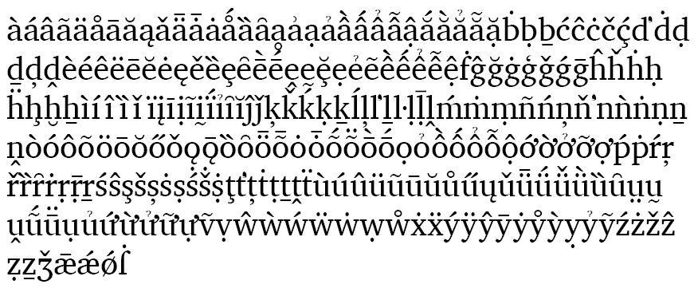

Charis - Design
Charis is optimized for readability in long printed documents. It is highly readable and holds up well in less-than-ideal reproduction environments due to its simple and robust design with strong serifs and clear features.
For a complete list of characters included in Charis, see Character Set Support.
Note regarding Charter
This Charis font is essentially the same design as the SIL Charis font first released by SIL in 1997. The design of the basic character set of Charis is similar (but not identical) to Bitstream Charter, designed by Matthew Carter. The following notice accompanied the Charter fonts:
© Copyright 1989-1992, Bitstream Inc., Cambridge, MA.
You are hereby granted permission under all Bitstream propriety rights to use, copy, modify, sublicense, sell, and redistribute the 4 Bitstream Charter® Type 1 outline fonts and the 4 Courier Type 1 outline fonts for any purpose and without restriction; provided, that this notice is left intact on all copies of such fonts and that Bitstream's trademark is acknowledged as shown below on all unmodified copies of the 4 Charter Type 1 fonts.
BITSTREAM CHARTER is a registered trademark of Bitstream Inc.
SIL Global is the creator of the Charis fonts, and is the owner of all proprietary rights therein.
Charis is a trademark of SIL Global.